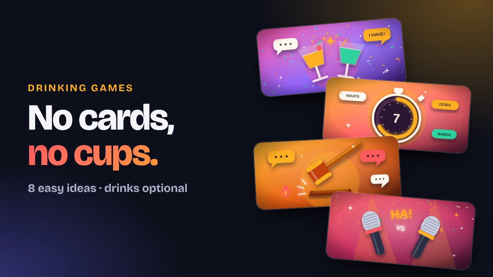

TipsyPlay Blog
Drinking Games Without Cards or Cups: 8 Easy Ideas
No deck, no cups, no problem. Half of these start the moment you say the rules out loud. The other half let your phones do the dealing, timing and scoring.

On this page
Before you start
Agree on three things before the first round, and every game below stays friendly:
- One small sip at most. A "drink" in this guide always means one small, optional sip. Nothing doubles, stacks or carries over to the next round.
- Every turn has a no-drink answer. Each game lists one: a point, a pose, or a short story. Soft drinks and water count as full participation.
- Passing is always fine. Nobody explains a pass, and nobody gets a replacement task for it.
The first four games are ideas you run yourselves, for any group of about 3 to 10 adults. The last four are TipsyPlay games: one person hosts on their phone and everyone joins with a code.
1. Never Have I Ever (the finger version)
You need: nothing. Players: 3 or more.
- Everyone holds up five fingers.
- Going around, each person says something they have never done: "Never have I ever missed a flight."
- Anyone who has done it puts a finger down. Stop when someone runs out of fingers, or after two full circles.
Drink or alternative: putting a finger down can come with one small sip, or nothing at all. The finger is the whole penalty.
Keep lines light. A good rule: nothing you would not say in front of everyone's least favourite cousin. Want the phone version? TipsyPlay's Never Have I Ever puts the same line on every phone and asks for I HAVE or NEVER, so nobody has to think of a line.
2. Categories around the table
You need: nothing. Players: 3 to 10.
- One person names a category: breakfast cereals, things in a junk drawer, famous dogs.
- Go around the table. Each person names one thing in the category within about three seconds.
- A repeat, a long pause, or an answer the table rejects ends the round. The person who stumbled picks the next category.
Drink or alternative: one small sip, or your best animal impression. Then start a fresh round. Nothing carries over.
3. Fizz Buzz
You need: nothing. Players: 3 or more.
- Count up around the table, one number each.
- Say "fizz" instead of any number divisible by 3, "buzz" for numbers divisible by 5, and "fizz buzz" for numbers divisible by both.
- A mistake sends the count back to 1, starting with the next person.
Drink or alternative: one small sip, or keep a tally on your hand. It looks easy until the count reaches the thirties. Add a third word for 7 once the table gets good.
4. Most Likely To
You need: nothing. Players: 4 or more.
- Someone asks a "who is most likely to" question: "Who is most likely to adopt three cats in one weekend?"
- Everyone counts down from three and points at a person at the same time. You can't point at yourself.
- The person with the most fingers on them answers next.
Drink or alternative: the most-pointed-at player takes one small sip, or explains themselves in one sentence. Ties share it. Keep questions about harmless habits, not looks, money or relationships.
5. Never Have I Ever on everyone's phone
You need: a phone each. Players: 2 to 12.
TipsyPlay's Never Have I Ever puts one line on every phone. Everyone taps I HAVE or NEVER at the same time, so nobody has to answer out loud first. Then the room sees who said yes.
Drink or alternative: one small sip or a 3-second pose, shown on screen. Nothing stacks. Switch to Most likely mode and everyone votes for a friend on their own phone instead.
6. Category Countdown
You need: a phone each, and a TV if you have one. Players: 3 to 10.
The phone version of game 2. In Category Countdown, Spotlight mode gives one player a ring timer to name as many answers as they can while everyone else watches and challenges. Hot Potato passes the category around until one player is left.
Drink or alternative: hit the target and everyone else takes a drink or does the alternative. Miss and the active player does. Turn on Points only and nobody drinks at all.
7. Hot Take Court
You need: a phone each. Players: 3 to 8.
In Hot Take Court one player defends a hot take ("cereal is soup"), another prosecutes, and the jury votes Guilty or Not guilty in secret on their phones. The verdict flips over one vote at a time.
Drink or alternative: pick Points only before you start if the table wants no drinking. Otherwise a verdict is one small sip or a lost point.
8. Punchline Duel
You need: a phone each. Players: 3 to 12.
Punchline Duel gives two players the same funny prompt. Both write an answer on their phone, and everyone else votes for the better one.
Drink or alternative: the writer of the losing answer takes a small sip or passes. It works best once people have warmed up with one of the games above.
Keep it fun for everyone
- Put water and soft drinks on the table first. Before the first round, not after someone asks.
- Alternate. Follow a game with drinks with one without, such as Fizz Buzz with tallies only.
- Stop while it's still fun. End a game after a set number of rounds rather than when someone runs out of fingers.
- Plan the ride home before anyone has a drink.
Quick FAQ
What drinking games need no supplies at all?
Never Have I Ever with fingers, Categories, Fizz Buzz and Most Likely To all need nothing but the people in the room. Phone games like TipsyPlay's Never Have I Ever and Category Countdown only need a phone each.
Can people play without drinking?
Yes. Every game in this guide has a no-drink option, such as a point, a pose or a one-sentence story, and passing is always allowed.
How many people do these games need?
Most work with 3 to 10 players. Never Have I Ever on phones takes 2 to 12, and Punchline Duel takes 3 to 12.
Play responsibly
You must be of legal drinking age in your location.
Every game is opt-in. Passing is always allowed, without explanation or a replacement task. Soft drinks and alcohol-free play are full options. No drinking races, chugging, pressure to finish a drink, or penalties that stack from one turn to the next. If you choose alcohol, keep any drink small and optional; breaks never require a drink. Never drink and drive. Plan a ride home before you start.
Ready to play?
One person hosts on their phone, everyone else joins with a code. Free, no app, and every game has a no-drink option.